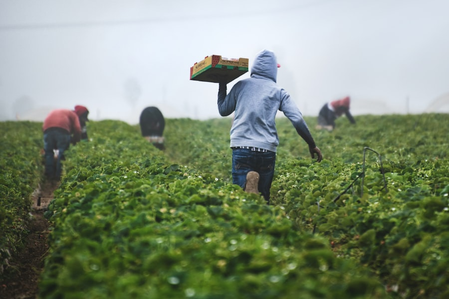

AERIAL · NDVI
Drone surveyAutonomous passes over structured blocks return crop-health maps before a problem becomes visible from the road.0.8 cm resolution · weekly pass


The farm is full of signals. Agriksense makes them useful.
smallholders are the long-term network opportunity across Sub-Saharan Africa.
agricultural financing gap the platform is designed to help address.
Field telemetry, aerial observations, farm records and identity signals converge into one workspace for teams that need to know what is happening now.
42 fields · 186 sensor points · 12 field officers
Agriksense pairs structured farmland with the instruments that make it legible - drones for the whole block, probes for the root zone and edge nodes for the record.


Farmers can keep the channels they already use. Institutions get a system that makes the farm legible.
See field conditions, coordinate field officers and surface the next action before a small problem becomes a crop-loss event.
Onboard members, verify records and build a digital history that follows the group from season to season.
Move from informal agricultural underwriting toward verified evidence from soil, crop activity, identity and farm history.
Collect GPS-tagged readings and observations through mobile-friendly workflows built for the environments where the work actually happens.
AgriScore turns verified field evidence into a 0-1000 index for partner institutions. Every new telemetry event can make the profile more current.

Verified identity · NIN linkedDifferent people use different interfaces. The underlying data stays connected: platform admins, organisations, field agents and farmers.